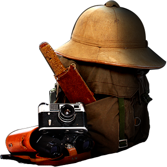

Welcome To Eagles Boy Scout Troops
We are all in the position of the farmer. If we plant a good seed, we reap a good harvest.If our seed is poor and full of weeds, we reap a useless crop. If we plant nothing at all, we harvest nothing at all. I want the future to be better than the past. I do not want it contaminated by the mistakes and errors with which history is filled.
more 